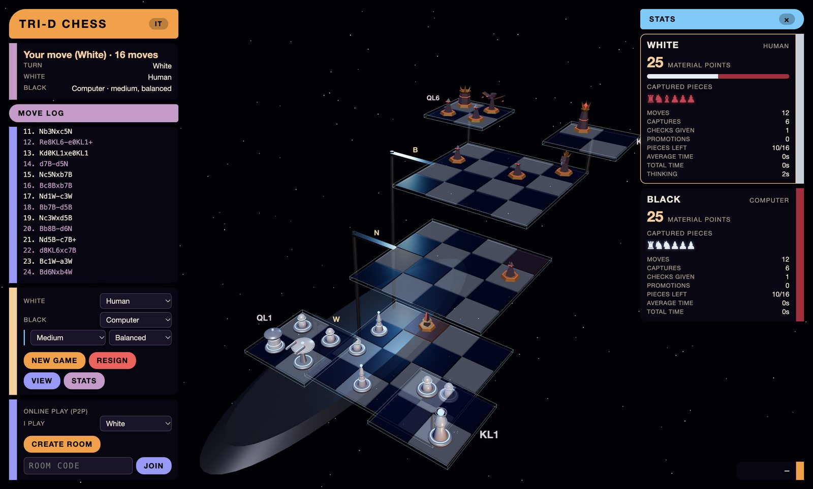
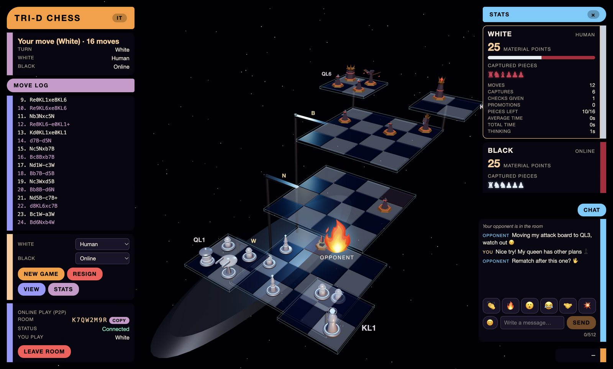
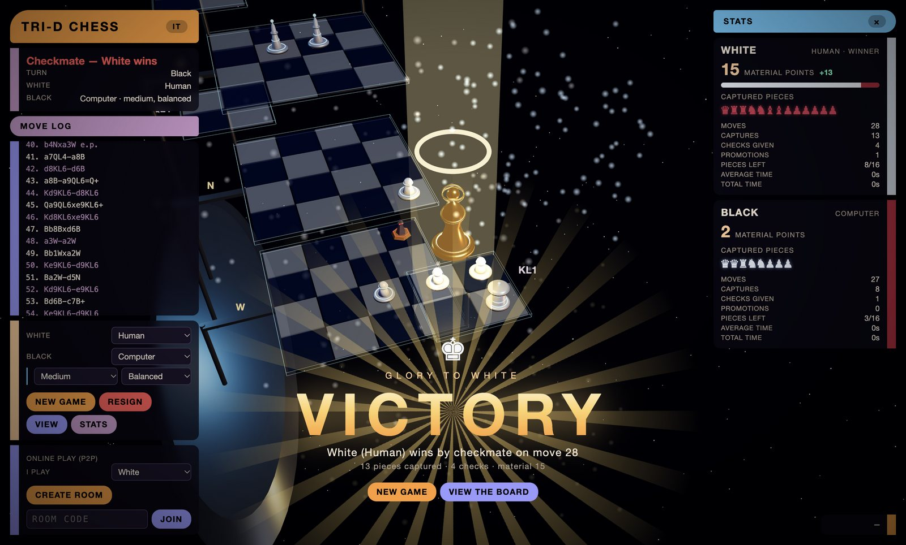

Gli scacchi tridimensionali, giocabili davvero.Three-dimensional chess, for real.
Tre tavole fisse, quattro tavole d'attacco che si spostano con i pezzi sopra, le regole da torneo di Jens Meder. Gioca contro il computer, contro un amico in rete senza server, oppure lascia giocare un'AI tramite MCP. Three fixed boards, four attack boards that move with the pieces on them, and Jens Meder's tournament rules. Play the computer, a friend online with no game server, or let an AI play through MCP.

Regole ufficialiOfficial rules
Le regole da torneo di Meder: arrocco, en passant, promozione a scelta per colonna, patte per ripetizione e materiale.Meder's tournament rules: castling, en passant, per-file promotion with a choice of piece, draws by repetition and material.
Tavole mobiliMovable boards
Dodici agganci, spostamenti in avanti, di lato e all'indietro: le tavole d'attacco portano con sé i pezzi.Twelve pins; boards move forward, sideways or back, carrying their pieces with them.
Quattro set di pezziFour piece sets
Federazione, Klingon, Borg e Romulani: scegli il set del Bianco e quello del Nero dal menu Pezzi.Federation, Klingon, Borg and Romulan: pick White's and Black's set from the Pieces menu.
E la damaAnd draughts
Dama italiana, internazionale (10×10), inglese, russa e brasiliana, ciascuna con le sue regole di presa.Italian, international (10×10), English, Russian and Brazilian draughts, each with its own capture rules.
Anche scacchi classiciClassic chess too
Dal menu Gioco passi agli scacchi tradizionali: scacchiera in noce e acero, sala medievale a lume di torcia, pezzi in avorio ed ebano.Switch the Game menu to traditional chess: a walnut-and-maple board in a torch-lit medieval room, ivory and ebony pieces.
ComputerComputer
Cinque livelli, da Principiante a Maestro, e tre stili: equilibrato, aggressivo, prudente. Diversi per Bianco e Nero.Five levels from Beginner to Master and three styles: balanced, aggressive, cautious, set per side.
In rete, senza serverOnline, serverless
Una lobby senza server mostra chi è in attesa: entri con un tocco, oppure usi una stanza privata col codice. La partita viaggia direttamente tra i due browser, cifrata.A serverless lobby shows who is waiting: join with one tap, or use a private room with a code. The game travels directly between the two browsers, encrypted.
Chat e reactionChat and reactions
Messaggi brevi con emoticon e reaction animate, orologio facoltativo e rivincita con un tocco.Short messages with emoji and animated reactions, an optional clock and one-tap rematch.
AI via MCPAI via MCP
Un server MCP integrato: collega Claude o un'altra AI a un colore, o due AI una contro l'altra.A built-in MCP server: connect Claude or another AI to one colour, or let two AIs play each other.


Una scacchiera, sette livelliOne chessboard, seven levels
- Tre tavole 4×4 fisse (W, N, B) e quattro tavole d'attacco 2×2 su dodici agganci (QL1–QL6, KL1–KL6).Three fixed 4×4 boards (W, N, B) and four 2×2 attack boards on twelve pins (QL1–QL6, KL1–KL6).
- Una mossa è valida se lo è vista dall'alto; il pezzo sceglie su quale livello atterrare.A move is legal if it is legal seen from above; the piece chooses the level it lands on.
- Un pezzo blocca il passaggio su tutti i livelli; il cavallo salta.A piece blocks movement on every level; knights jump.
- Spostare una tavola d'attacco è una mossa: vuota o con un solo pezzo, avanti o di lato (indietro solo se vuota).Moving an attack board is a move: empty or with one piece, forward or sideways (backwards only when empty).
- Arrocco corto e lungo, en passant anche tra livelli, promozione sull'ultima traversa di ogni colonna.King- and queen-side castling, en passant across levels, promotion on each file's last rank.
- Patta per stallo, triplice ripetizione, materiale insufficiente e regola delle 50 mosse.Draws by stalemate, threefold repetition, insufficient material and the 50-move rule.
Riferimento:Reference: Jens Meder — Tournament Rules for Three-Dimensional Chess.
Tre modi per giocareThree ways to play
1 · Nel browser1 · In the browser
Apri la demo: computer, partite in rete con chat, replay, italiano e inglese. Sul telefono puoi installarla con "Aggiungi alla schermata Home": funziona anche offline contro il computer. Niente MCP, che richiede l'app.Open the demo: computer, online games with chat, replays, Italian and English. On a phone, install it with "Add to Home Screen": it also works offline against the computer. No MCP, which needs the app.
2 · App per macOS2 · macOS app
Scarica il DMG dalle Release e trascina l'app in Applicazioni. Non è firmata con un Developer ID: al primo avvio usa clic destro → Apri.Download the DMG from Releases and drag the app to Applications. It is not signed with a Developer ID: the first time, right-click → Open.
3 · Dal codice sorgente3 · From source
git clone https://github.com/nicolorisitano82/tri-d-chess.git
cd tri-d-chess
npm install
npm start # http://localhost:47321
npm run app # Electron app
npm run dist # macOS DMG in dist/Collega un'AI (MCP)Connect an AI (MCP)
Con l'app o il server avviati, registra un endpoint per colore in Claude Code:With the app or server running, register one endpoint per colour in Claude Code:
claude mcp add --transport http tri-d-chess-white "http://localhost:47321/mcp?color=white"
claude mcp add --transport http tri-d-chess-black "http://localhost:47321/mcp?color=black"